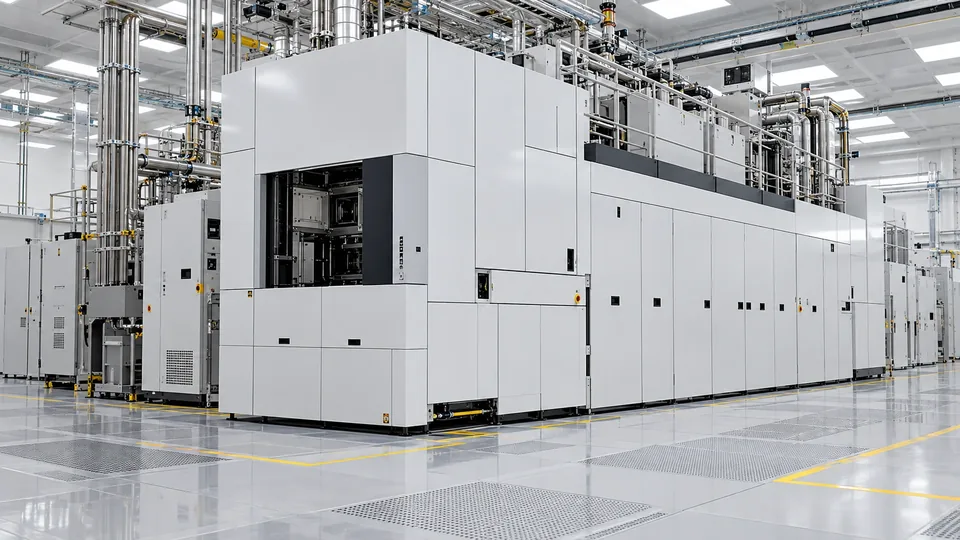

ASML’s Record Quarter Strengthens the AI Demand Case, With Supply Still Constrained
Record sales and a higher annual outlook support the semiconductor investment story. Customer interest years ahead remains different from revenue already earned.

ASML reported record third-quarter sales of €11.662 billion and net income of €4.960 billion on October 14. Its gross margin was 57.5%. The chip-equipment supplier forecast full-year revenue of €44 billion to €45 billion, providing fresh evidence that the infrastructure behind the AI boom is generating substantial business.
The result is more informative than a capacity announcement because it includes revenue already recognized. It still needs to be read alongside the supply constraints and future assumptions described by management.
Results, guidance and customer interest are separate evidence
ASML expects fourth-quarter sales of €14.2 billion to €15.2 billion. Management also says some customers have expressed interest in orders for 2029 and 2030, and that currently planned supply would not fully meet expected demand in 2027 and 2028. It is investigating additional capacity beyond previously communicated plans.
Those statements occupy different positions in the business cycle. Completed sales are historical results. Quarterly guidance is a forecast. Interest in equipment several years out is an indication of customer planning, not equivalent to a completed sale or cash received.
Keeping that hierarchy intact is particularly important in an investment boom. The longer the planning horizon, the more opportunity there is for financing, technology or end-user demand to change before equipment is delivered.
The installed base provides another route to revenue
The release reports €3.289 billion of installed-base management sales, covering service and field options. This is a different source of business from delivering new systems: an equipment supplier can earn revenue by helping existing machines remain useful and productive.
That distinction has economic consequences. A customer considering expansion can compare the benefits of an upgrade with a new installation. The decision depends on the process, available space, production targets and cost. More demand need not translate into new-machine purchases in a fixed proportion.
For investors, separating those revenue streams can make a quarterly result easier to understand. A change in sales mix may affect margins, and the timing of major system deliveries can make a simple comparison between quarters less informative than it appears.
Capacity must be built through the whole supply chain
A supplier’s decision to raise output is earlier than the physical delivery of additional equipment. Skilled labor, specialized components and customer installation schedules can determine how quickly a plan becomes usable production capacity.
A useful review therefore follows milestones rather than only the size of the ambition. Manufacturing output, shipments, installation and customer acceptance each provide different evidence. Where a company recognizes revenue in that process also matters when comparing disclosures.
The same discipline applies to buyers. A foundry can order equipment for a future fab while the associated power, building and production process are still being prepared. Orders express a commitment; the finished operation must still justify it.
A strong supplier is evidence, not the whole AI investment verdict
ASML’s results strengthen the argument that customers are spending on semiconductor capacity. They do not establish the returns earned by every company purchasing AI services or building data centers. The economics of the supplier and the economics of the final user are connected, but they are not identical.
The next test is whether investment can be converted into productive capacity at a pace that supports both customer returns and supplier growth. This quarter supplies concrete evidence of sales. The commitments reaching toward 2030 deserve to be watched as commitments, with their execution still ahead.
Sources (2)
For informational purposes. This article is not investment advice.